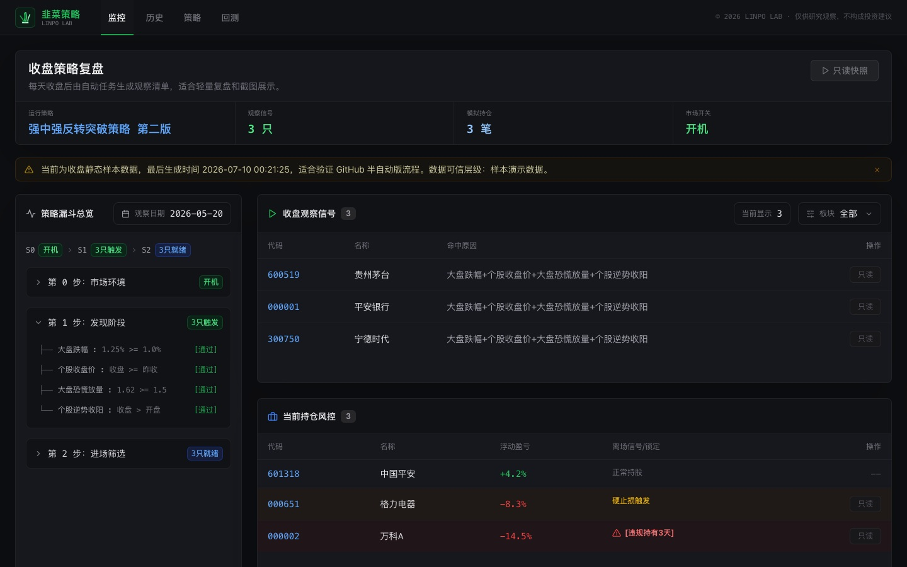
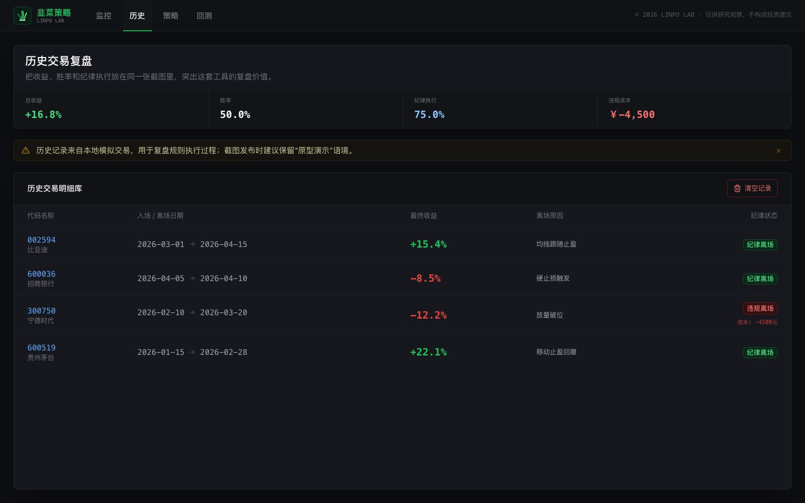
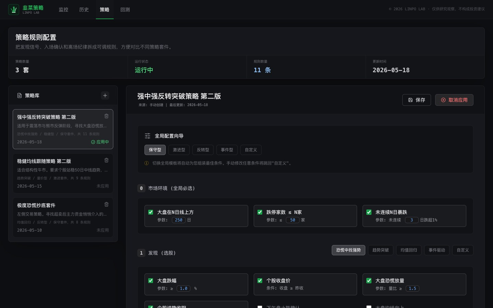
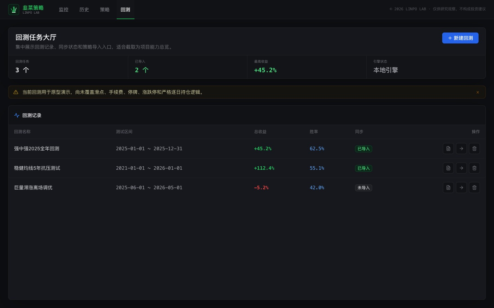

收盘后从条件到记录的复盘工作流是否可追溯。
Experiment summary
先确认原型验证的是复盘闭环，不是策略结果。
包含监控、历史、策略和回测四个界面入口。
原型在本地与展示环境中使用样本化数据。
四组界面状态对应五个连续复盘动作。
Interface evidence
先看界面证据：它们显示流程已经被拆到什么粒度。
每张截图说明一个可观察动作，不把界面当成产品包装素材。
监控页把市场条件、候选信号和持仓风险放在一次收盘检查里
左侧漏斗展示筛选阶段，右侧候选与持仓同时出现，验证复盘不是只看一个买卖提示。

历史页为模拟动作留下可复查的时间线
它验证的是“为什么当时会出现这条记录”能否回看，而不是模拟结果本身是否有代表性。

策略页把主观想法拆成可讨论的条件与阈值
策略不再只是一个名称；条件被显示为可以逐项检查、修改和复盘的配置。

回测页保留验证入口，也明确它尚未构成严格验证
入口的价值是暴露下一阶段需要补足的数据与评价逻辑，而不是制造完成错觉。

Experiment question
一套收盘复盘流程，能否先被组织成可检查的动作，再讨论它是否可信？
要验证什么
用户能否从市场开关进入条件判断、候选观察、持仓记录与后续复盘。
为什么做它
复盘常被压缩成结果陈述；本实验尝试保留每个判断阶段的可追溯关系。
Runtime boundary
原型可以跑流程，但没有资格替代数据校验、真实执行或收益判断。
可验证的范围
本地界面、步骤关系、样本化信号和模拟记录能否形成一次完整的复盘体验。
不验证的范围
实时行情准确性、策略收益、严谨回测与任何真实交易或账户执行能力。
Review flow
五个阶段，把“看到信号”变成一条可以回看的链路。
01 环境读取市场开关与前置条件。
02 筛选确认候选是否通过漏斗。
03 观察检查信号出现的来由。
04 记录保存模拟持仓与变化。
05 回看为后续验证保留入口。
System decision
流程原型需要把数据等级与回测缺口一起显示出来。
数据决策
当前以样本和半自动刷新场景验证流程；数据层级必须被看作原型条件而非真实基础设施。
回测决策
回测入口用于确认后续需要什么验证能力，尚未定义为可比较、可复现实验结果。
Experiment finding
流程能跑通，但可信度不会因为页面完整就自动成立。
已成立
从策略条件到记录的流程可以被界面拆解、检查并作为复盘共同语言。
仍薄弱
数据质量、指标定义与回测方法还不足以支撑结果层面的判断。
Limitations
这是流程原型，不是完整的策略产品。
样本限制
截图与样本数据说明界面能力，不能代表长期市场环境。
验证限制
缺少严格数据回放、参数对照与长期观察，无法推出策略层结论。
Next
下一轮先做可信度基建，再增加新的策略表达。
P0 · 数据与指标
明确数据来源、更新规则和每个条件的定义与测试方式。
P1 · 回放与记录
让历史状态可重放、可比较，并把模拟记录与条件关联起来。